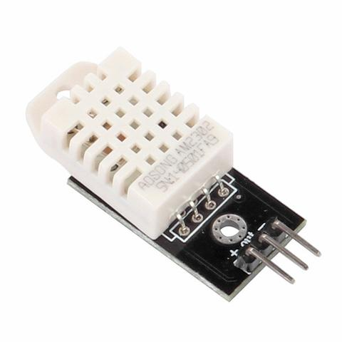
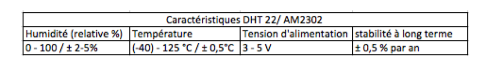
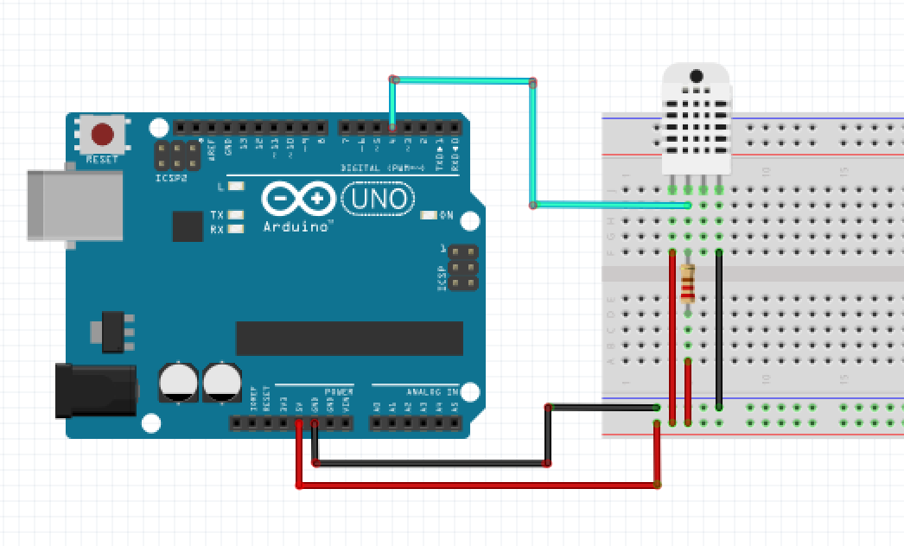
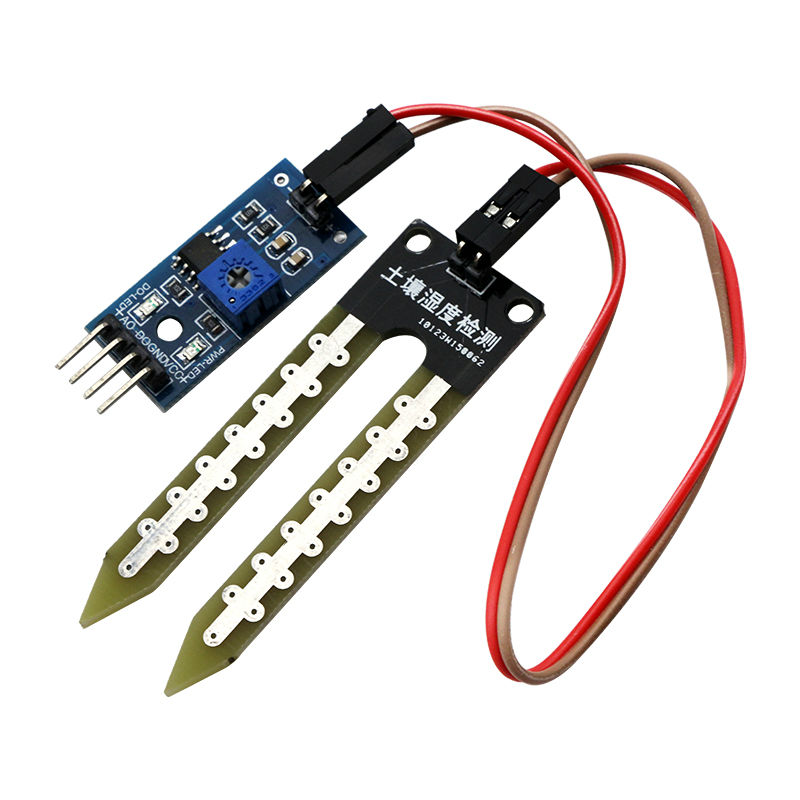
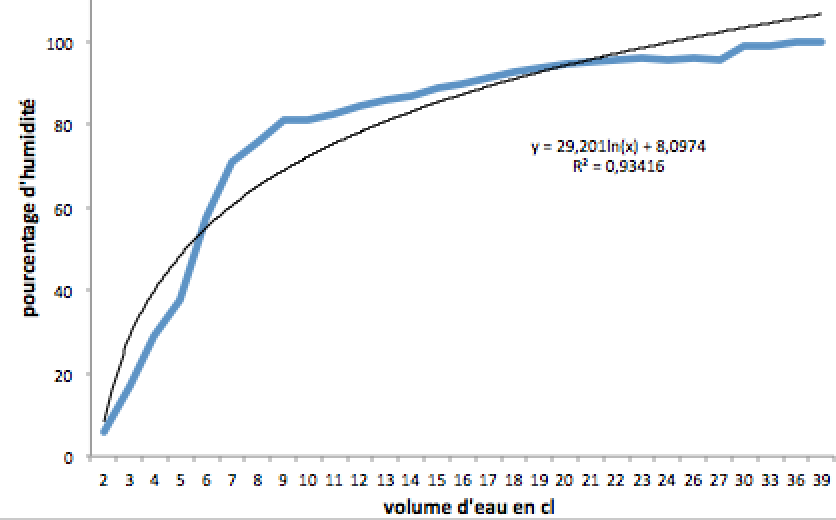
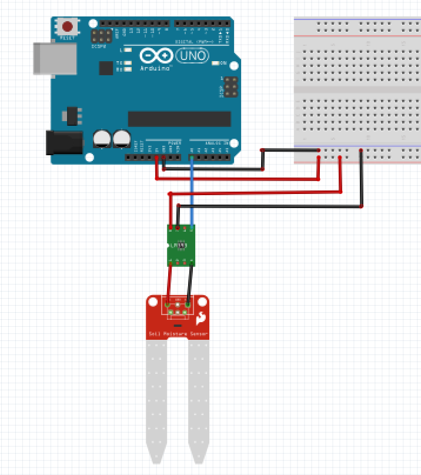
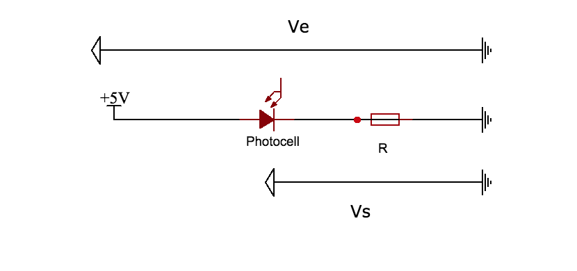
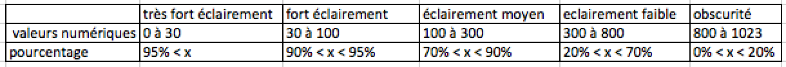
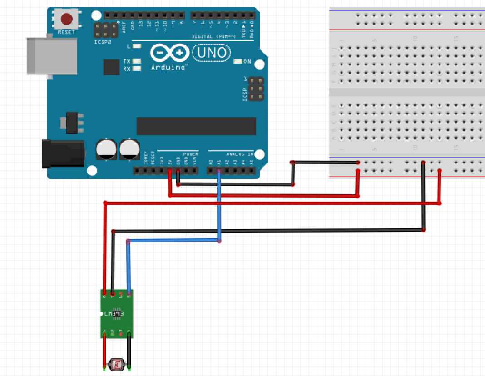

Le smart pot plant est composé de 4 capteurs, ce qui lui permet d'avoir les informations nécessaire pour pouvoir fonctionner en autonomie.
Ces capteurs sont :
Un capteur DHT22 mesurant la température et l'humdité de l'air.
De deux capteurs YL-69 avec comparateurs LM393 mesurant l'humidité de la terre du pot.
Un capteur LM393 avec photodiode mesurant la luminosité
Capteur DHT22: Collecte de la temperature et de l'humidité
Présentation générale
La réalisation de cette étape a été faite grâce à un capteur numérique de température et d'humidité de l'air, le DHT22 en figure 1.
C'est l'un des capteurs les plus utilisés pour collecter des mesures métrologiques. Le DHT22 fonctionne grâce à un capteur d'humidité capacitif, d'une thermistance mesurant la température de l'air ainsi qu'un circuit intégré.

figure 1: Capteur DHT22

figure 2: tableau caractéristique du DHT22
Principe de fonctionnement
Comment fonctionne la prise de mesure du capteur DHT22 ?
Pour mesurer l'humidité, le capteur DHT-22 utilise un composant de détection d'humidité qui est composé de deux électrodes avec un substrat qui retient l'humidité entre elles. Ainsi, lorsque la valeur de résistance entre les électrodes change, le circuit intégré mesure et traite ce changement puis transmets la valeur.
Pour mesurer la température, le capteur DHT 22 utilise une thermistance (ou capteur NTC).Le terme "NTC" signifie "Negative Temperature Coefficient" ce qui signifie que la valeur de la résistance diminue lorsque la température augmente.. Une thermistance est une résistance variable qui voit sa valeur varier en fonction du changement de température.
La communication entre le capteur DHT22 et le microcontrôleur se réalise en 3 étapes:
Dans cette communication l'Arduino agit comme maître et le capteur comme esclaves. L'Arduino met pendant un laps de temps en état bas (LOW) le bus de données, cela réveille le capteur et lui permet de préparer des mesures de température et d'humidité. Une fois le temps écoulé, l'Arduino libère le bus de données et passe en écoute.
Après la libération du bus de données, le capteur montre à l'Arduino qu'il est bien réveillé. Pour cela il répond au maître en maintenant un état bas (LOW) pendant une très courte duré puis un état haut (HIGH) pendant une même durée.
Pour la dernière étape, le capteur transmet à l'Arduino une série de 5 octets. Les deux premiers correspondent aux mesures en humidité, les deux suivants correspondant aux mesures en températures et le cinquième octets contient une série de valeurs de contrôle permettant de vérifier que les données sont correctement lues.
Circuit électrique
Le DHT22 est composé de 3 pins :
VCC: alimentation en 5V.
Data OUT: sortie digitale.
La masse.
Dans le circuit électrique, une résistance de pull-up (résistance de tirage) de 5KΩ est nécessaire pour assurer un maintient du bus de données à un niveau élevé et permettant ainsi la communication entre l'Arduino et le capteur.
Voici le schéma électrique du branchement du DHT22 :

figure 3: Circuit électrique Capteur DHT22
Code arduino
Pour pourvoir récupérer les données du DHT22, des bibliothèques sont à télécharger et sont simple d'utilisation. Ce sont des fonctions déjà codées et open source qui permettent, lorsqu'on fait appel à elles, de récupérer directement l'humidité et la température ambiante.
Voici ci-dessous la fonction correspondant à la prise de mesure d'humidité:
et voici celle pour la prise de mesure de température.
Capteur YL-69: Collecte de l'humidité de la terre
L'eau est indispensable pour tous les végétaux, c'est pourquoi l'utilisation d'un capteur d'humidité est pertinent pour être informé du besoin en eau d'une plante. Le capteur YL-63 et le comparateur LM393 permettent de mesurer l'humidité de la terre du pot. Ces données sont les plus importantes du Smart pot puisqu'elles permettent le déclenchement de la pompe hydraulique.

figure 4: Capteur YL-69 et comparateur LM393
Principe de fonctionnement
Le capteur YL-69 est composé de deux électrodes permettant de déterminer le volume d'eau. Un courant passe entre les électrodes via le sol. Grâce à cela, le capteur peut déduire la valeur de la résistance du sol. Mais, à long terme, cela peut provoquer leur corrosion. En présence d'eau dans le sol, le capteur mesurera une résistance plus faible puisque l'eau est conductrice. Ainsi, l'humidité du sol est liée à la valeur de la résistance du sol. Plus la résistance du sol est élevé, plus le sol est sec.
Le capteur renvoie une tension comprise en 0 et 5 V correspondant à la tension aux bornes des électrodes. Elle est ensuite convertie en valeurs numériques comprise entre 0 et 1023. Autrement dit, le capteur à une résolution de 0,0049. La valeur numérique 1023 correspond au minimum d'humidité. Ces valeurs numériques ont été ensuite convertie en pourcentage afin que cela soit plus parlant pour l'utilisateur.
Afin de determiner la relation qu'il y'avait entre le volume d'eau versé dans le pot de fleur et l'humdite affiché par le capteur, il a fallu réaliser une experience.
Cette experience consistait à verser 40 fois 1cl d'eau et d'observer le pourcentage d'humidité.

figure 5: Pourcentage d'humidité en fonction du volume d'eau versée dans la terre
on obtient ainsi une relation entre le pourcentage d'humidité et le volume d'eau versé dans le pot de fleur.
ou x correspond au volume d'eau versé.
cette formule est utile pour controler le taux d'humidité dans la terre du pot de fleurs et permet le déclanchement de la pompe hydraulique pour l'arrosage automatique.
Circuit électrique
Le capteur YL-69 est branché au comparateur LM-393, qui est lui-même branché à l'Arduino UNO.Il possède trois pins:
La sortie Analogique connecté en A0
L'alimentation en 5V par l'arduino UNO
La masse.

figure 6: Circuit électrique Capteur YL-69
Dans notre cas, le module LM-393 n'est pas utilisé comme un comparateur mais comme une simple module de connexion. Ce dernier est utile en mode digital car il permet de comparer la valeur de tension collectée avec celle du potentiomètre et renvoyer une tension à l'état haut si celle-ci est supérieure et inversement.
Code Arduino
La fonction permettant de récupérer l'humidité du sol est définie comme suit:
Une déclaration de deux variables entières: la première correspondant aux valeurs analogiques obtenues par le capteur et la deuxième à l'alimentation.
Afin de prolonger la durée de vie du capteur, la fonction alimente les électrodes uniquement lors de la prise de mesures. Le capteur est alors alimenté grâce à la fontion suivante:
Littéralement elle "écrit" un état haut ("HIGH") sur la pin soilMoisterVcc. Autrement dit, on alimente la pin en 5V. Une somme de trois mesures de la pin analogique est réalisée. La valeur de cette somme est appliquée à une autre variable (soilMoister) déclarer auparavant dans la fonction. De la même manière, le capteur est ensuite mis à l'état bas.
Une moyenne est réalisée avec la valeur de (soilMoister) afin d'être le plus précis.
La fonction map() permet de modifier la plage de variation d’une variable, ici elle est utilisée pour calculer le pourcentage d'humidité mesuré par rapport à des valeurs de réference.
où 1019 correspond au minimum d'humidité mesuré avec de la terre extrêmement sèche et 375 au maximum d'humidité mesuré. La nouvelle plage de valeur est defini ici par les attributs 3 et 4 de la fonction, à savoir 0 et 100 afin de réaliser un pourcentage.
Capteur de luminosité LM393: Collecte de la lumière
L'utilisation d'un capteur de luminosité parait évidente pour être informé de la santé d'une plante. En effet, cette dernière nécessite la lumière du soleil pour réaliser la photosynthèse. La lumière est donc indispensable pour la majorité des plantes.
Le capteur de luminosité LM393 permets de récupérer les données sur le flux lumineux du pot.
figure 7: Capteur de luminosité LM393
Principe de fonctionnement
Le capteur de luminosité LM393 peut fonctionner en analogique ou en digital. Afin de récupérer des valeurs numériques, le capteur fonctionnera en mode analogique. Il est constitué d'une résistance de référence et d'une photorésistance qui varie en fonction de la lumière qui l'éclaire. Plus la quantité de lumière est importante plus la valeur de la résistance de la photodiode augmente.

figure 8: Schéma électrique du fonctionnement du capteur de luminosité
D'après la formule du pont diviseur, la tension en sortie du capteur est donc :
Ainsi, le capteur alimenté en 5V, renvoie une tension comprise entre O et 5V. Plus la photorésistance est éclairée, plus la tension en sortie du capteur est faible.La tension est ensuite convertie en valeur numérique comme expliqué précédemment, entre 0 et 1023, par pas de 0,0049V, avec 1023 correspondant au minimum de luminosité.
Suite à l'étude du Capteur, voici ci-dessous à travers un tableau, ce que renvoie le capteur de luminosité en fonction du flux lumineux qu'il lui est exposé.

figure 9: Tableau représentant l'éclairement en fonction des données analogiques
Circuit electronique
Le capteur de luminosité est connecté à l'arduino via ses trois pins:
La pin Analogique connectée en A1
L'alimentation en 5V par l'arduino UNO
La masse.

figure 10 : Circuit électronique du capteur de luminosité
Code Arduino
Le code est constitué d'une fonction permettant de lire les valeurs analogiques de la Pin A1. La voici:
La fonction map() est également utilisée:
avec 1023 est le minimum de luminosité mesuré et 10, le maximum.
Tableaux de données
Chaque donnée lue par les fonctions précédentes est directement insérée dans une case d'un tableau d'entier global de taille 6.
Les 5 premières cases correspondent donc aux données lues par les capteurs et la dernière correspond l’état de la pompe à eau (activée ou non).